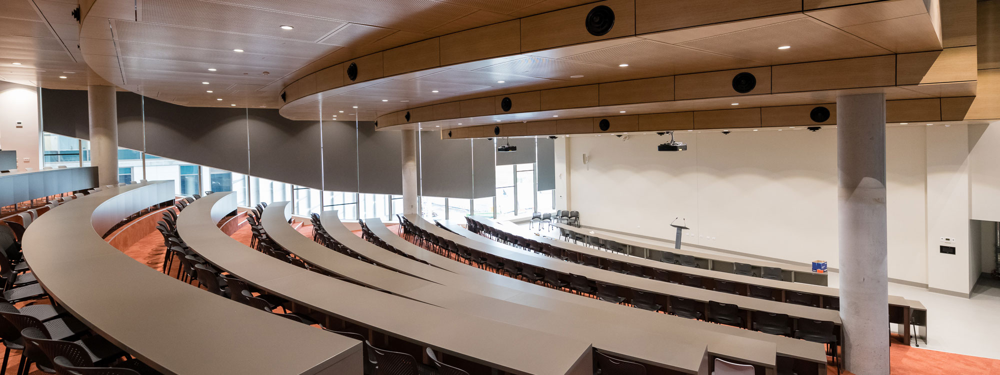

Queensland Department of Education
Sets up school events in <10 mins

Sets up school events in <10 mins
The Queensland Government has been focusing its efforts on driving productivity within the State as they focus on how they can create the knowledge-based jobs of the future under the Advance Queensland program. This resulted in departments of the Government focusing more of their efforts on improving productivity.
The Queensland Department of Education and Training (DET) is responsible for delivering education & training services for people at every stage of their personal and professional development, ensuring that all the education and training systems are aligned with the state's employment skills and economic priorities.
Specifically, the department manages; Early Childhood Education, Student and School Performance, Curriculum Implementation (Teaching and Learning), Training and Skilling Queensland, Building the Education Revolution (capital works in Queensland schools), Workforce Reform (additional literacy and numeracy teachers and teacher aides) and Policy Development.
DET approached iVvy in 2013 with a need to be able to take event registrations and manage a range of their venues. Their goals for moving from mostly manual processes and a range of disparate systems, allowing any Schools and departments to manage the registration process for a free ticket and paid for events. The range of events can vary anywhere from small workshops to large conferences.
As part of the consideration, they needed a tool that would be easy to use with little training, and could easily be accommodated for with existing budgets. In addition to this, it needed to work with the complex processes required for managing finances within the various departments. Government Departments also have a range of requirements in regards to data security and location, requiring the data to be housed in Australian Data centres that meet a range of complex security requirements.
DET was able to use iVvy out of the box. Schools can set up an event easily in under 10 minutes for small events. The intuitive nature of iVvy has allowed users to set up simple events without training required. Onboarding new users has been efficient with over 83 separate schools and departments with over 190 users adopting the software.
Since iVvy has developed all the tools required to manage, market and report on events in a single system, DET discovered that this has dramatically improved efficiencies and ensures that engagement with the department is now much more professional.
Event setup time
Schools and departments
Active users
For more complex events such as large multi-day conferences iVvy DET use iVvy's drag and drop website builder to create websites that can:
"We have been using the iVvy system for both events and venue management for nearly 3 years and have been extremely happy with the system and the functionality. We have streamlined our processes and saved a huge amount of time within our department since moving to iVvy. The ease of use and using the cloud enables many of the team to work from wherever they are. We have also reduced our cost of event registration – both in labour and system costs. I'm happy to let iVvy worry about the servers, software, updates, etc. and get on with our business."
The Institute of Professional Learning, Department of Education and Training Queensland

Discover how top venues are transforming operations with iVvy. Let's talk about how your team can quote faster and book smarter.
Request a Demo